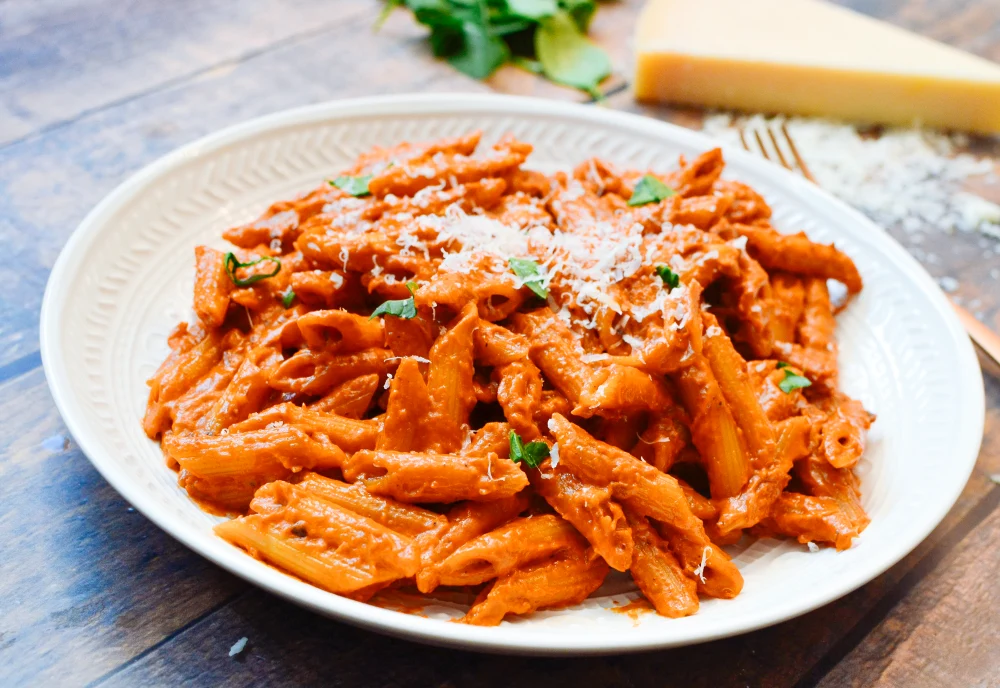

Carbonara is a classic Italian pasta dish. It consists of spaghetti noodles, mixed with a sauce made of egg yolk and cheese.
The key ingredient, which gives carbonara its distinct flavor, is guanciale. Guanciale is Italian style cured pork cheek.
It is used because of its strong flavor and large percentage of fat. The fat is very crucial to the dish as it melts down and mixes
with the egg yolk and cheese to create almost a mayonnaise or hollandaise sauce that coats the noodles.
Ingredients
Spaghetti Noodles
4 Egg yolks
3 tbs Grated parmesan cheese
Black pepper
1/10 pound guanciale
Instructions
First, start boiling a pot of water and put a pan with a small amount of olive oil on a separate burning on medium heat.
Then, dice your guanciale into small cubes. Once your guanciale has been properly diced, put it into the pan with the olive oil,
occasionally stirring to ensure even cooking. As you're doing this, mix your egg yolks with the proper amount of parmesan and a liberal
amount of black pepper. Stir until the mixture is even. At this point the water should be boiling.
Before you put your noodles in the water, salt it generously. Place the noodles in the water and remove the pan with the guanciale
from the burner to cool. Once the noodles are done, mix them in the pan with the guanciale. After the fat has evenly coated the noodles.
Dump the egg/parmesan mixture into the pan and mix in evenly. Serve with a sprinkling of parmesan and black pepper.
How to make the perfect Penne Alla Vodka
By: Andrew He

Penne Alla Vodka
Penna Alla Vodka is a classic Italian pasta dish. It consists of penne noodles, mixed with a sauce made of vodka, tomato paste, and heavy cream.
The recipe originated in Italy and became very popular in the United States in the decades since its conception.
The sauce is very rich and decadent.
Ingredients
Penne Noodles
1.5 cups heavy cream
0.5 cups vodka
3 tbs Grated parmesan cheese
Tomato paste
3 tsps Garlic Powder
3 tsps Onion Powder
2 tsps Salt
2 tsps Black pepper
Instructions
First, start boiling a pot of water and put a pan with a small amount of olive oil on a separate burning on medium heat.
Then, add a medium amount of tomato paste into the pan. Tomato paste typically comes in tubes, so squeeze out maybe 1/8 of the tube or less.
Let the tomato paste cook on the stove until it starts to stick to the pan. When it starts to stick, pour the proper amount of vodka into the pan.
As you do this, use a spatula to scrape the parts of the tomato paste that have burned on the pan. They should now come off as a thick liquid.
Wait about 1-2 minutes to allow the alchohol to cook out before pouring in the heavy cream and mixing the ingredients until even.
At this time the water should be ready. Prior to placing the pasta in the pot, salt the water liberally. After the sauce is evenly mixed, pour in the
salt, garlic powder, onion powder, and black pepper. Mix the sauce so that the seasoning is evenly distributed. Once the pasta is ready place it into the
pan with the sauce. Mix until the noodles are coated evenly and as you are doing so mix in some parmesan cheese as well.
Finish with paprika and parmesan cheese.